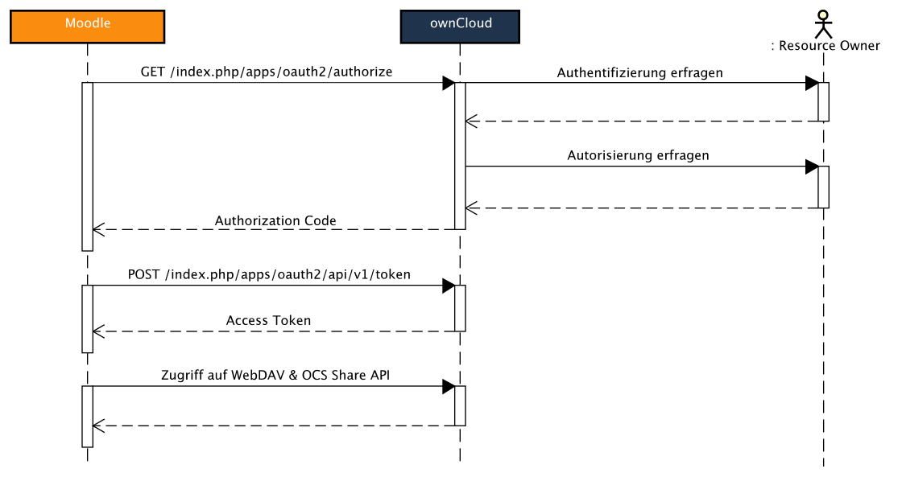

Admin Tool: oauth2sciebo
Zweck
Wie bereits im Kapitel Software Architektur angeschnitten, ist der Hauptzweck dieses Plugins die Schnittstelle zu ownCloud bereitzustellen. Zu diesem Zweck wird die im Projekt implementierte ownCloud App OAuth2 mit Hilfe eines OAuth 2.0 Clients angesprochen. Zusätzlich werden sowohl die WebDAV, als auch die OCS Share Schnittstelle, über OAuth 2.0 abgesichert, in diesem Client umfasst. Zwar ist der Client auf einen OAuth 2.0 Protokollablauf in Zusammenarbeit mit der entsprechenden ownCloud App angepasst, jedoch könnte er in Zukunft auch als Ausgangspunkt genutzt werden, um ähnliche Schnittstellen zu erreichen.
Im Wesentlichen implementiert dieses Plugin das folgende Integrationsszenario:
- Als Nutzer möchte ich OAuth2 benutzen können, um mich im Learnweb als ownCloud Nutzer anzumelden.
Jedoch betrifft es auch alle anderen Szenarien indirekt, da diese erst durch die Authentifizierung mittels OAuth 2.0 ermöglicht werden können.
Vorgegebene Schnittstelle
Für Admin Tools ist in moodle lediglich eine schwach definierte Schnittstelle gegeben. Wie in jedem anderen moodle Plugin auch, müssen zunächst einige Standartdateien implementiert werden:
version.php: Beschreibt die Versionsnummer des Plugins, die benötigte moodle Version und Abhängigkeiten des Plugins.access.php: Legt die Berechtigungen für definierte Aktionen innerhalb des Plugins anhand von Nutzerrollen fest.tool_oauth2sciebo.php: Beinhaltet Sprachstrings für unterschiedliche Regionen und Sprachen, sodass definierte Strings, abhängig von der jeweiligen Sprache, dynamisch angezeigt werden können.
Zusätzlich zu den allgemeinen Plugindateien, sollte unser Admin Tool auch mindestens noch eine Datei namens settings.php
beinhalten. Diese umfasst alle Einstellungen, die für das Admin Tool geltend dem Administrator der moodle Instanz zur
Verfügung gestellt werden sollen. Nach der Eingabe, wird diese Konfiguration moodle-intern gespeichert und kann von dem
Client, wenn nötig abgerufen werden.
Insgesamt ergibt sich folgende Struktur von Ordnern und Dateien, die mindestens für die Implementierung des von uns gebrauchten Admin Tools notwendig ist:
Implementierung
Eingabemaske
Um die OAuth 2.0 und WebDAV Clients erfolgreich zum Zugriff auf eine entsprechende Sciebo bzw. ownCloud Instanz zu befähigen, müssen diese zunächst mit Hilfe benötigter Eingabedaten konfiguriert werden. Diese sollen zentral im Admin Tool eingegeben und gespeichert werden können, um sie anschließend von dem Client aus, und damit auch in den ihn verwendenden Plugins, nutzen zu können.
Benötigte Eingaben
Um den OAuth 2.0 Protokollablauf zu ermöglichen, müssen folgende Daten im Vorfeld erfasst werden:
Client ID: wird in ownCloud generiert und dient der Identifizierung eines regstrierten Clients.Secret: wird ebenfalls in ownCloud generiert und zur Authentifizierung verwendet.
Beide Datensätze sind Strings bestehend aus Buchstaben und Zahlen. Daher eignet sich für beide ein Textfeld, welches ausschließlich alphanumerische Werte erwartet, zur Eingabe.
Zur Nutzung des WebDAV Clients werden darüber hinaus folgende Daten benötigt:
Server Addresse: Url über die der ownCloud Server erreicht werden kann.Server Pfad: der angehangene Pfad, über den die WebDAV Schnittstelle erreicht werden kann.Port: Port des WebDAV-Servers.Protokoll: Wahl zwischen HTTP und HTTPS.
Während die Wahl des Protokolls mittels einer Auswahl aus vorhandenen Optionen abgeboten werden kann, müssen die restlichen Werte in einem Textfeld erfragt werden. Auch in diesem Fall werden die Variablen nach den zu erwartenden Werten gesäubert. Darüber hinaus werden alle Eingaben, bis auf dem Port, als notwendig angesehen.
Settings
Die nun benötigten Eingabedaten müssen in moodle auf der Einstellungsseite des Plugins erfragt und entprechend gespeichert werden. Um dies zu bewerkstelligen, wird in der settings.php jedes Eingabefeld einzeln definiert. In dem folgenden Beispiel wird das Eingabfeld für die Client ID beschrieben:
$setting = new admin_setting_configtext('tool_oauth2owncloud/clientid',
get_string('clientid', 'tool_oauth2owncloud'),
get_string('help_oauth_param', 'tool_oauth2owncloud', 'client identifier'), '', PARAM_ALPHANUM, '64');
$settings->add($setting);
Die Definition des Feldes beinhaltet den Ort, an dem die Eingabe gespeichert wird und dementsprechend wiedergefunden werden kann. In diesem Fall wird die Eingabe unter den Plugin-spezifischen Einstellungen hinterlegt. Weiterhin werden der Name des Feldes (so wie er dem Nutzer angezeigt wird), ein Beschreibungstext und Standartwert (in diesem Fall bleibt es leer)für das Feld angegeben. Zuletzt werden der Typ (in diesem Fall alphanumerisch) und die Länge der erwarteten Eingabe festgelegt.
Die Einstellungsseite wird anschließend in die Kategorie der Admin Tools eingeordnet, wo sie von dem Seitenadministrator wiedergefunden werden kann.
Der Administrator kann die Einstellungen jederzeit ändern und damit die gewünschte Schnittstelle konfigurieren und gegebenenfalls anpassen.
OAuth 2.0 Client
Den funktionalen Kern des Plugins stellt der OAuth 2.0 ownCloud Client dar. Dieser befindet sich in Form der Klasse owncloud in der
Datei sciebo.php in dem classes Ordner des Plugins. Diese Klasse steuert sowohl den moodle-seitigen Protokollablauf
von OAuth 2.0, als auch den Verbindungsaufbau zu ownCloud mittels WebDAV und OCS Share API. Dadurch, dass owncloud von der im moodle Core
enthaltenen Klasse oauth2_client erbt, ist ein Großteil des Protokollablaufs bereits abgedeckt.
Der Konstruktor der Klasse oauth2_client muss mit den Client ID und Secret Daten aufgerufen werden.
Diese werden aus den zuvor angewandten Einstellungen beschafft:
public function __construct($callback) {
$server = get_config('tool_oauth2owncloud', 'server');
$clientid = get_config('tool_oauth2owncloud', 'clientid');
$secret = get_config('tool_oauth2owncloud', 'secret');
$protocol = get_config('tool_oauth2owncloud', 'protocol');
$port = get_config('tool_oauth2owncloud', 'port');
$path = get_config('tool_oauth2owncloud', 'path');
parent::__construct($clientid, $secret, $callback, '');
Zu diesem Zweck wird die Methode get_config verwendet. Sie gibt den für ein Plugin und einen zuvor einzigartig definierten
Namen aus den Einstellungen heraus den dazu gespeicherten Wert.
Darüber hinaus muss eine callback URL angefügt werden, die den Pfad angibt, an den nach der Authentifizierung und Authorisierung
der Nutzer weitergeleitet werden soll. Dieser wird allerdings extern in den Plugins erzeugt, die den owncloud Client benutzen.
Zu beachten ist, dass für die Klasse owncloud ein namespace definiert wird, womit diese effizient in externen Plugins verwendet werden
kann, die einen OAuth 2.0 ownCloud Client benötigen.
Weiterhin müssen die Methoden auth_url und token_url der Elternklasse zwingend implementiert werden, um bei der Authentifizierung
und der Token-Beschaffung auf die richtigen Pfade zu verweisen:
protected function auth_url() {
// Dynamically generated from the admin tool settings.
return $this->prefixoc . 'index.php/apps/oauth2/authorize';
}
protected function token_url() {
return $this->prefixoc . 'index.php/apps/oauth2/api/v1/token';
}
Hierfür werden die beiden Pfade aus der Serveraddresse, dem Port und dem Serverpfad berechnet, da der Endpunkt für die oauth2 App in ownCloud gleich bleibt. Die benötigten Eingabdaten werden, soweit angegeben, der Eingabemaske entnommen.
Erweiterungen der Schnittstellen
Du zur Umsetzung des Verfahrens Die vorgegebenen Schnittstellen nicht ausreichten, mussten in Anpassungen in moodles Core Bibliotheken vorgenommen werden. Im Folgenden werden diese Änderungen beschrieben.
OAuth 2.0 Client
Anpassung der post Methode
Die moodle-interne Klasse oauth2_client erbt von einer weiteren Klasse aus dem moodle Core mit dem Namen curl, welche mittels
cURL HTTP Requests erstellen und verschicken kann. Dadurch ist die Klasse fähig eigenständig einen Access Token mit einem
Authorization Code mittels der HTTP POST Methode über die token Schnittstelle in ownCloud zu beschaffen. Allerdings
bietet die dafür zuständige Methode post nicht die Möglichkeit einen Basic Authorization Header zur Anfrage hinzuzufügen,
welcher Client ID und Secret zur Autorisierung in der oauth2 ownCloud App mit verschickt. Daher musste die post Methode
in der owncloud Klasse so überschrieben werden, dass der benötigte Header vor dem Aufruf der geerbten Methode gesetzt wird:
public function post($url, $params = '', $options = array(), $auth = false) {
if ($auth == false) {
$this->setHeader(array(
'Authorization: Basic ' . base64_encode($this->get_clientid() . ':' . $this->get_clientsecret())
));
$this->log_out();
}
return parent::post($url, $params, $options);
}
Der entsprechende Header wird nur dann gesetzt, wenn ein Access Token angefordert werden soll. Um nicht zusätzlich einen
Authentication Header mit einem abgelaufenen Access Token zu versenden, muss dieses Access Token mittels log_out()
entfernt werden.
Erweiterung des Access Tokens
Ein in der Eltern-Klasse oauth2_client erhaltenes Access Token verfügt über die Attribute token, was die Zeichenkette des Tokens
beinhaltet, und expires, welches das Ablaufdatum des Tokens angibt. Da jedoch von der oauth2 ownCloud App darüber hinaus noch die
Attribute refresh_token und user_id versandt werden und für einige Integrationsszenarien gebraucht werden, musste das Access Token
im OAuth 2.0 ownCloud Client, nach dem Upgrade aus einem Authorization Code, um eben diese Eigenschaften erweitert werden:
$r = upgrade($code);
$accesstoken = new stdClass;
$accesstoken->token = $r->access_token;
$accesstoken->expires = (time() + ($r->expires_in - 10));
$accesstoken->user_id = $r->user_id;
$accesstoken->refresh_token = $r->refresh_token;
$this->store_token($accesstoken);
Einführung des Refresh Tokens
Da nun das Access Token um die fehlende Eigenschaft refresh_token ergänzt worden ist, musste der Client ebenfalls um die
Fähigkeit, ein Refresh Token zu einem Access Token aufzuwerten, erweitert werden. Hierzu, musste einerseits an der Stelle
eingegriffen werden, an der das aktuelle Access Token geprüft wird. Ist das aktuelle Access Token abgelaufen und ein Refresh
Token vorhanden. So muss versucht werden ein neues Access Token mit Hilfe des Refresh Tokens anzufordern. Dabei wird die selbe
Schnittstelle verwendet, die auch zum Aufwerten eines Authorization Codes zum Einsatz kommt. Daher muss bei der Ausführung der
Methode upgrade_token zwischen Refresh Token und Authorization Code unterschieden werden:
if ($refresh == false) {
$grant = 'authorization_code';
$type = 'code';
} else {
$grant = 'refresh_token';
$type = 'refresh_token';
}
$params = array(
'grant_type' => $grant,
$type => $code,
'redirect_uri' => $callbackurl->out(false),
);
$response = $this->post($this->token_url(), $params);
Die übergebenen Parameter der HTTP POST Methode müssen, wie in dem Protokollablauf spezifiziert, jeweils auf den Typ der
aufzuwertenden Zeichenkette (code vs. refresh_token) angepasst werden. Im Fall eines Erfolges sollten beide Anfrage-Typen
ein Access Token zurückliefern.
Speicherung Nutzer-spezifischer Access Tokens
Um einen hohen Grad an Komfort und Sicherheit gewährleisten zu können, musste dem Nutzer die Möglichkeit eines einmaligen
Logins gegeben werden. Durch die Einführung eines Refresh Tokens wurde der erste Schritt in diese Richtung getätigt, da nun
das Access Token, im Normalfall, immer wieder aufgewertet werden kann, ohne sich erneut in ownCloud authentifizieren zu müssen.
Weiterhin wurde der OAuth 2.0 ownCloud Client um eine Methode check_login ergänzt, welche nach Erhalt eines Access Tokens,
dieses innerhalb der persönlichen Einstellungen des aktuellen Nutzers hinterlegt und, falls vorhanden, bei der Prüfung des
Login-Status auch daraus bezieht.
Darüber hinaus bietet die Methode check_login auch die Möglichkeit ein Access Token für ein spezielles, angegebenes Plugin
zu speichern um zum Beispiel einen technischen Nutzer in ownCloud zu verwenden.
WebDAV Client
Da ownCloud Datentransfer lediglich über eine WebDAV Schnittstelle anbietet, musste auf diese in moodle mittels eines dafür vorgesehenen Clients zugegriffen werden können. Moodle bietet bereits einen WebDAV Client an, welcher als Basis ownClouds WebDAV Schnittstelle verwendet werde konnte.
Absicherung mittels OAuth 2.0
Der moodle-interne Client bietet eine große Auswahl an WebDAV Methoden, welche zum Großteil erfolgreichen Datentransfer mit ownCloud ermöglichen. Der Nachteil des Client besteht darin, dass er ausschließlich mit Basic Auth ausgestattet ist und somit bei jedem Zugriff Nutzername und Passwort des ownCloud Accounts versandt werden muss. Um eine passwortlose Authentifizierung zu ermöglichen, musste der WebDAV Client mittles OAuth 2.0 abgesichert werden.
In der Umsetzung wurde der Client mit einem Access Token ausgestattet, welches bei jedem Zugriff, innerhalb eines Bearer Authentication Headers, an ownCloud mitversandt wird:
private function create_basic_request($method) {
// ...Füge die benötigten Header hinzu.
if ($this->_auth == 'basic') {
$this->header_add(sprintf('Authorization: Basic %s',
base64_encode("$this->_user:$this->_pass")));
} else if ($this->_auth == 'bearer') {
$this->header_add(sprintf('Authorization: Bearer %s',
$this->_token));
}
}
ownCloud-seitig wird der Header erkannt und statt einer Kombintion aus Nutzernamen und Passwort, das übergebene Access Token ausgewertet. Wenn das Access Token noch gültig ist, wird die Anfrage ganz normal behandelt.
Weiterleitungen
Um den OAuth 2.0 und den WebDAV Client miteinander zu kombinieren, wurden Weiterleitungs-Methoden implementiert, welche die von weiteren Integrationsszenarien benötigten Zugriffe auf die WebDAV Schnittstelle über den OAuth 2.0 ownCloud Client weiterleiten. Dieser setzt zunächst ein gültiges Access Token und ruft dann die entsprechende WebDAV Methode über den WebDAV Client auf. Im folgenden Beispiel wird der Aufruf der Methode MKCOL gezeigt:
public function make_folder($path) {
$this->dav->set_token($this->get_accesstoken()->token);
return $this->dav->mkcol($this->prefixwebdav . $path);
}
Der Pfad zur WebDAV Schnittstelle des ownCloud Servers wird bereits im Konstruktor der Klasse owncloud aus Angaben in der
Eingabemaske zusammengestellt.
OCS Share API
Auch ownClouds OCS Share API wird zur Abdeckung einiger Intergrationsszenarien benötigt, da sie sowohl zum Teilen von privaten Inhalten, als auch zum Generieren öffentlicher Links gebraucht werden kann. Mussten zuvor noch Nutzername und Passwort bei jedem Zugriff auf diese Schnittstelle zwingend zur Authentifizierung angegeben werden, reicht durch das Setzen eines Bearer Authentication Headers nun auch ein von ownCloud erhaltenes Access Token.
Integration mit ownCloud
